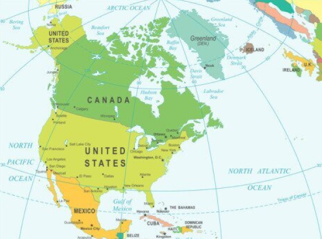
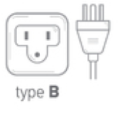
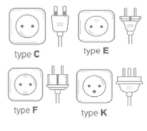
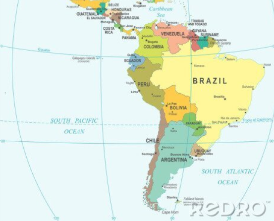
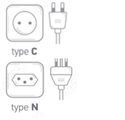
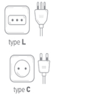
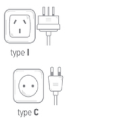
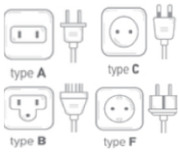

Noord-Amerika
In Noord-Amerika, met name in de Verenigde Staten en Canada, worden andere stekkertypen en spanningen gebruikt dan in Europa.
De standaard stopcontacten zijn van type A en B. Type A heeft twee platte, parallelle pinnen, terwijl type B een extra
ronde aardingspin heeft. Deze stopcontacten werken op een spanning van 120V en een frequentie van 60Hz, wat lager is dan de
230V in Europa.


Verenigde Staten
In Verenigde Staten wordt het type & stopcontacten het meest gebruikt.

Canada
In Canada worden de type A & B stopcontacten het meest gebruikt.

Groenland
In Groenland worden de type C, E, F & K stopcontacten gebruikt.
Mexico
In Mexico worden de type A & B stopcontacten het meest gebruikt.
Bahamaás
In Bahamaás worden de type A & B stopcontacten het meest gebruikt.

Cuba
In Cuba worden de type A, B & L stopcontacten het meest gebruikt.
Antigua
In Antigua worden de type A & B stopcontacten het meest gebruikt.
Barbuda
In Barbuda worden de type A & B stopcontacten het meest gebruikt.
Dominican Republic
In Dominican Republic worden de type A & B stopcontacten het meest gebruikt.

Guatemala
In Guatemala worden de type A & B stopcontacten het meest gebruikt.
Zuid-Amerika
Zuid-Amerika kent veel verschillende stopcontacten en spanningen, afhankelijk van het land waar je naartoe reist.
De meest voorkomende stekkertypen zijn type C, dat vaak in Europa wordt gebruikt, en type I, met drie platte pinnen in een
V-vorm (zoals in Argentinië). Ook type A en B, zoals in Noord-Amerika, komen voor in landen als Colombia en Venezuela.
De spanning varieert sterk per land. Sommige landen, zoals Brazilië, gebruiken zowel 127V als 220V, afhankelijk van de regio,
terwijl andere landen meestal 220V gebruiken. De frequentie is in de meeste landen 50Hz, hoewel sommige landen, zoals Bolivia,
60Hz gebruiken.


Brazilie
In Brazilie worden de type C & N stopcontacten het meest gebruikt.

Peru
In Peru worden de type A & C stopcontacten het meest gebruikt.
Costa Rica
In Costa Rica worden de type A & B stopcontacten gebruikt.
Ecuador
In Ecuador worden de type A & B stopcontacten het meest gebruikt.

Chili
In Chili worden de type C & L stopcontacten het meest gebruikt.

Argentinie
In Argentinie worden de type C & I stopcontacten het meest gebruikt.
Bolivia
IIn Bolivia worden de type A & C stopcontacten gebruikt.

Suriname
In Groenland worden de type A, B, C & F stopcontacten gebruikt.
Venezuela
In Venezuela worden de type A & B stopcontacten gebruikt.
Panama
In Panama worden de type A & B stopcontacten gebruikt.